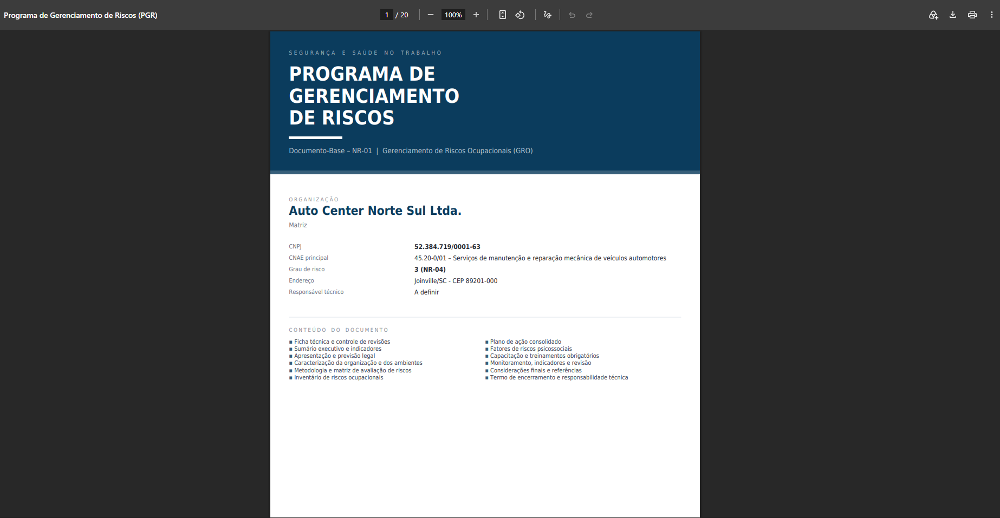
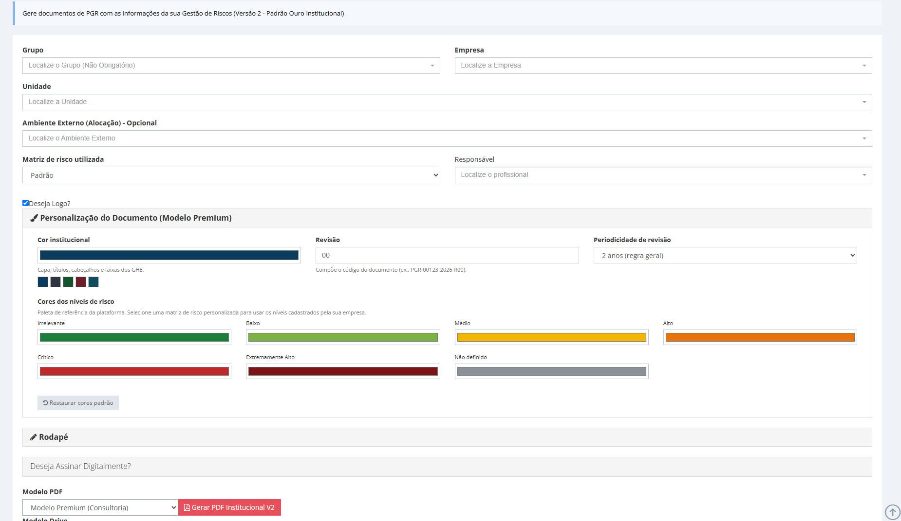
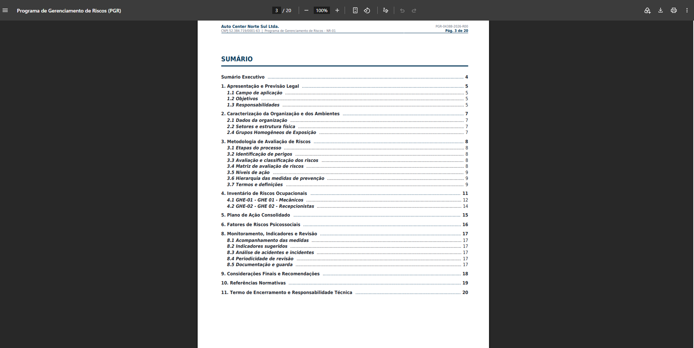
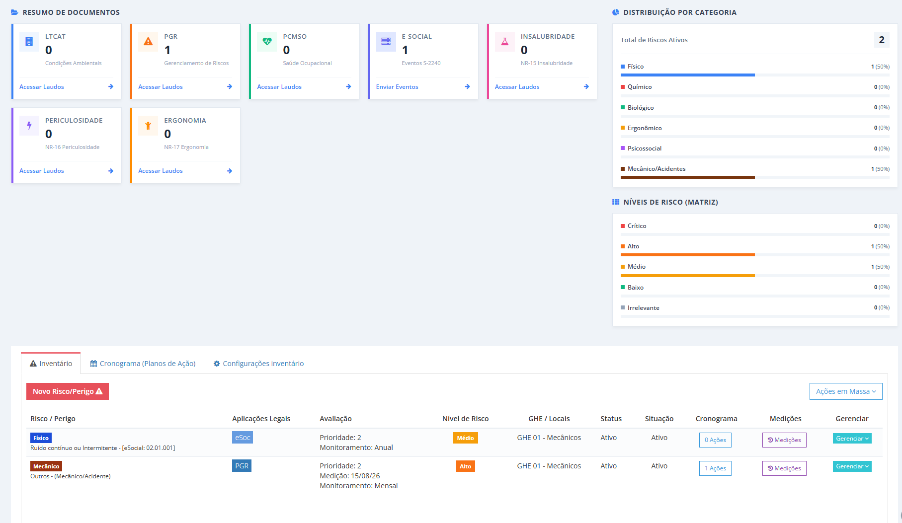

Novo modelo de PGR em PDF: documento premium em 6 passos
Capa institucional, sumário executivo com indicadores, matriz de risco colorida e plano de ação com semáforo de prazos. Veja o documento por dentro e como gerar o seu.

O essencial em 30 segundos
- Outro documento, mesma base de dados: o Modelo Premium acrescenta capa institucional, ficha técnica com controle de revisão, sumário executivo com indicadores e termo de encerramento. O Modelo Padrão continua disponível e não muda.
- Cores do risco vêm da sua matriz: os níveis cadastrados pela consultoria aparecem coloridos no inventário inteiro, no sumário executivo e na matriz impressa — e você ainda pode ajustar cor por cor na hora de gerar.
- Nada é redigitado: o PDF é montado a partir dos GHE, do inventário de riscos e do plano de ação que já estão no sistema. São 6 passos entre abrir a tela e baixar o arquivo.
Quem vende SST para empresa grande conhece a cena. O levantamento foi bem feito, o inventário está completo, cada risco tem plano de ação com responsável e prazo — e o PDF que chega na mesa do contratante parece relatório interno. Página branca, tabela atrás de tabela, sem capa, sem síntese. O trabalho técnico é bom; o documento não mostra isso.
O detalhe é que o PGR costuma ser o único entregável que o cliente lê inteiro. É ele que circula entre RH, jurídico e auditoria, é ele que o comprador usa para comparar propostas e é ele que aparece na fiscalização. Documento pobre vira objeção comercial antes de virar problema técnico.
Por isso o Bevart passou a oferecer um segundo modelo de PGR em PDF, ao lado do Modelo Padrão: o Modelo Premium (Consultoria). Mesma base de dados, mesma NR-01, outra apresentação. Abaixo você vê o documento por dentro e o passo a passo para gerar o seu.
O que muda no novo modelo de PGR em PDF
A NR-01 exige que o PGR contenha, no mínimo, o inventário de riscos ocupacionais e o plano de ação. Os dois modelos entregam isso. A diferença está no que existe em volta: o material que faz o documento ser lido por quem não é da área técnica e sustentar uma auditoria sem explicação verbal.
| Seção do documento | Modelo Padrão | Modelo Premium |
|---|---|---|
| Capa | Capa simples com dados da empresa | Capa institucional com cor da consultoria, logo do cliente e do emissor, CNAE e grau de risco |
| Controle do documento | — | Ficha técnica com código do documento, revisão, histórico de revisões e responsabilidade técnica |
| Visão gerencial | — | Sumário executivo com indicadores, distribuição de riscos por nível e por grupo de agentes e ranking de GHE por criticidade |
| Matriz de risco | Imagem da matriz cadastrada | Matriz montada no documento a partir da configuração de probabilidade e severidade, com legenda de prazos de tratamento |
| Inventário de riscos | Tabelas por GHE | Ficha por risco com cabeçalho colorido pelo nível, avaliação quantitativa, EPI com C.A. e marcas de insalubridade, periculosidade e enquadramento previdenciário |
| Plano de ação | Ações listadas junto de cada risco | Ações junto do risco e cronograma consolidado, ordenado por prazo, com situação de cada ação |
| Fechamento | Bloco de assinatura | Termo de encerramento com responsabilidade técnica, registro de conselho e espaço para o representante legal |
Trocar de modelo é escolher outra opção no seletor antes de gerar. Documentos já emitidos no Modelo Padrão seguem válidos e nada muda para quem prefere o formato enxuto.
Veja o documento por dentro
O arquivo abaixo é um exemplo completo do Modelo Premium, da capa ao termo de encerramento. Role dentro do visualizador para percorrer as seções na ordem em que o cliente vai lê-las.
A capa é o primeiro sinal de que o documento foi feito para circular fora da área técnica: identidade visual da consultoria, logo do cliente, CNPJ, CNAE com grau de risco, endereço, frente de trabalho quando houver e o responsável técnico com registro de conselho.

Cores por nível de risco vindas da sua matriz
Essa foi a mudança mais pedida. Se a sua consultoria cadastrou uma matriz de avaliação própria — com os nomes de nível que você usa e a cor de cada um —, o PDF passa a usar exatamente essas cores. Não é decoração: é o que faz o leitor encontrar o risco crítico sem ler o documento inteiro.
A cor aparece em quatro lugares, sempre com o mesmo significado: na matriz impressa na seção de metodologia, na barra de distribuição do sumário executivo, na coluna de nível do quadro-resumo de cada GHE e no cabeçalho da ficha de cada risco.
Sem matriz personalizada selecionada, o documento usa uma paleta de referência (verde para irrelevante, amarelo para médio, laranja para alto, vermelho para crítico). Com matriz selecionada, valem os níveis e as cores que você cadastrou. Em ambos os casos dá para ajustar cor por cor na tela de geração antes de emitir.

Gere o seu PGR nesse modelo hoje
Se o inventário de riscos já está no Bevart, o documento sai pronto: você escolhe o modelo, a cor e emite.
Criar conta grátisSumário executivo e plano de ação consolidado
São as duas seções que mudam a conversa com o contratante. O sumário executivo abre o documento com os números da unidade: quantos GHE, quantos trabalhadores abrangidos, quantos riscos avaliados, quantas ações no plano e quantas estão vencidas. Em seguida vem a distribuição dos riscos por nível, a distribuição por grupo de agentes e um ranking dos GHE mais críticos.
Fecha com um parecer sintético gerado a partir dos próprios dados: riscos críticos que exigem intervenção imediata, riscos ainda sem medida vinculada, exposições com caracterização de insalubridade ou periculosidade e exposições com potencial enquadramento previdenciário.

Já o plano de ação consolidado reúne, num cronograma único ordenado por prazo, todas as medidas de prevenção espalhadas pelos GHE. Cada linha mostra o GHE, o risco associado, a medida proposta, o responsável, a data de controle e a situação: vencida, vence em 30 dias, no prazo ou concluída. É a página que a reunião de acompanhamento usa.

O documento ainda traz a seção de fatores de riscos psicossociais — que passaram a integrar expressamente a identificação de perigos da NR-01 —, os treinamentos obrigatórios consolidados por GHE, a seção de monitoramento com indicadores sugeridos e as referências normativas. Se você ainda não trata psicossocial no seu programa, vale ler como estruturar a avaliação psicossocial no sistema.
Como gerar o Modelo Premium em 6 passos
O caminho é o mesmo de sempre: no menu NR1 GRO/PGR › PGR. A única novidade na tela é o seletor de modelo e o painel de personalização que aparece junto com ele.
- Selecione grupo, empresa e unidade. Se o PGR for de uma frente de trabalho externa (obra, cliente, alocação), escolha também o Ambiente Externo — o documento passa a considerar só os GHE daquela frente e identifica isso na capa.
- Escolha a matriz de risco e o responsável técnico. A matriz define os níveis e as cores que o documento vai imprimir. O responsável alimenta a ficha técnica e o termo de encerramento, com registro de conselho e UF.
- Em "Modelo PDF", selecione Modelo Premium (Consultoria). O painel de personalização aparece logo acima, já preenchido com os níveis da matriz escolhida.
- Ajuste a identidade visual. Defina a cor institucional (há atalhos prontos), o número da revisão e a periodicidade de revisão do inventário: dois anos na regra geral, três anos quando a organização adota sistema de gestão de SST. Se quiser, altere a cor de cada nível de risco.
- Opcional: assine digitalmente. Abra o bloco de assinatura, escolha o profissional com certificado A1 cadastrado, informe a senha e a vigência do contrato. Marcando a guarda digital, o PDF assinado é arquivado automaticamente no GED da unidade. O detalhe de como isso funciona está em como assinar o PDF de SST e validar a conformidade.
- Clique em Gerar PDF. O arquivo é montado na hora, com sumário navegável e marcadores por seção.
Gere primeiro sem assinar e confira o sumário executivo. Se aparecerem ações vencidas ou riscos sem medida vinculada, o parecer vai apontar — melhor descobrir isso antes do contratante.
O que precisa estar cadastrado para o PDF sair completo
O documento é um espelho do cadastro. Ele não inventa conteúdo: o que estiver vazio no sistema aparece vazio no PDF, e o parecer do sumário executivo aponta a lacuna. Vale conferir estes pontos antes de emitir:
- GHE com funções vinculadas. Sem o vínculo função–GHE não há rastreabilidade da exposição, e as colunas de efetivo saem zeradas.
- Nível de risco preenchido em cada item do inventário. É o que dá cor ao documento e alimenta a distribuição e o ranking de criticidade.
- Plano de ação com data de controle e responsável. Sem data não existe semáforo de prazo; sem responsável a coluna sai como "a designar".
- Logo da unidade e dados da sua empresa. É o que aparece na capa, no cabeçalho de todas as páginas e na faixa de elaboração.
- Profissional de segurança com registro de conselho e UF. Alimenta a ficha técnica e o termo de encerramento.
Se alguma dessas peças ainda não está montada, o caminho é o roteiro de montagem do inventário de riscos e do plano de ação. Para a rotina de manutenção e emissão, veja como elaborar, monitorar e gerar o PGR no sistema. E se você está avaliando a plataforma, a página do sistema de PGR online mostra o módulo inteiro.
Uma última observação prática: o Modelo Premium não substitui a revisão técnica. Ele organiza, hierarquiza e apresenta o que você levantou — a responsabilidade sobre o conteúdo continua sendo de quem assina. Gere uma versão de uma unidade que você conhece bem, leia da capa ao termo de encerramento e ajuste o cadastro no que o documento apontar. Na segunda emissão ele já sai como você quer entregar.
Perguntas frequentes
O Modelo Padrão do PGR deixa de existir?
Não. Os dois modelos convivem no mesmo seletor e você escolhe a cada emissão. Documentos já gerados no Modelo Padrão continuam válidos e o formato não mudou.
Como personalizar as cores dos riscos no PGR em PDF?
Selecione o Modelo Premium na tela de geração. O painel de personalização carrega os níveis da matriz de risco escolhida com as cores cadastradas e permite alterar cada uma antes de emitir, além da cor institucional que define capa, títulos e cabeçalhos.
Preciso refazer o inventário para usar o novo modelo?
Não. O documento é montado a partir dos GHE, do inventário de riscos e do plano de ação já cadastrados. Basta escolher o modelo e gerar.
O PDF do Modelo Premium pode ser assinado digitalmente?
Sim. O fluxo de assinatura com certificado digital A1 do profissional é o mesmo dos demais documentos, e o arquivo assinado pode ser enviado automaticamente para a guarda digital da unidade.
De quanto em quanto tempo o PGR precisa ser revisado?
A regra geral da NR-01 é a revisão do inventário de riscos a cada dois anos, ou a cada três anos quando a organização adota sistema de gestão de segurança e saúde no trabalho. Independentemente do prazo, a revisão é exigida sempre que houver mudança nos riscos, inadequação das medidas de controle ou ocorrência de acidente ou doença relacionada ao trabalho. Na tela de geração você escolhe qual periodicidade o documento vai declarar.